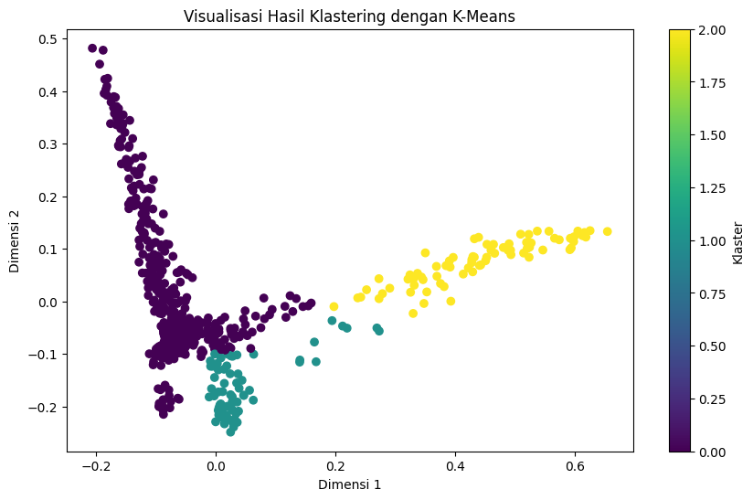

import os
import pandas as pd
import numpy as np
import gdown
import string
import matplotlib.pyplot as plt
name = 'data_crawling_berita_antaranews.csv'
gdown.download(f'https://drive.google.com/uc?id=1iuY-raVaRjcwV63Ua8fIGa9dC01yvPvQ', name, quiet=False)
Downloading...
From: https://drive.google.com/uc?id=1iuY-raVaRjcwV63Ua8fIGa9dC01yvPvQ
To: /content/drive/MyDrive/KULIAH/SEMESTER 7/PPW/ppw/PAGES/data_crawling_berita_antaranews.csv
0%| | 0.00/1.88M [00:00<?, ?B/s]
84%|████████▎ | 1.57M/1.88M [00:00<00:00, 13.5MB/s]
100%|██████████| 1.88M/1.88M [00:00<00:00, 14.8MB/s]
'data_crawling_berita_antaranews.csv'
data = pd.read_csv("data_crawling_berita_antaranews.csv")
data
| Tanggal | Penulis | Judul | Artikel | Label | |
|---|---|---|---|---|---|
| 0 | Senin, 30 Oktober 2023 08:33 WIB | Pewarta: Rivan Awal LinggaEditor: Sigit Pinard... | Masinton Pasaribu harap pemeriksaan 9 hakim ko... | Jakarta (ANTARA) - Politikus PDI Perjuang... | politik |
| 1 | Senin, 30 Oktober 2023 05:28 WIB | Pewarta: Laily RahmawatyEditor: Laode Masrafi ... | Politik kemarin, Kaesang effect hingga target ... | Jakarta (ANTARA) - Lima berita politik pa... | politik |
| 2 | Senin, 30 Oktober 2023 00:11 WIB | NaN | Din Syamsuddin ajak warga Muhammadiyah tak apa... | ANTARA - Tokoh Muhammadiy... | politik |
| 3 | Minggu, 29 Oktober 2023 23:31 WIB | Pewarta: Rina Nur AnggrainiEditor: Imam Budila... | PKS heran hasil survei AMIN selalu buruk | Jakarta (ANTARA) - Sekretaris Jenderal PK... | politik |
| 4 | Minggu, 29 Oktober 2023 23:20 WIB | Pewarta: Rivan Awal LinggaEditor: Imam Budilak... | Sekjen PKS targetkan tiga perempat warga NU du... | Jakarta (ANTARA) - Sekretaris Jenderal (S... | politik |
| ... | ... | ... | ... | ... | ... |
| 715 | Senin, 23 Oktober 2023 15:40 WIB | Pewarta: JuraidiEditor: Eka Arifa Rusqiyati C... | Riadi bangga sebagai pembawa bendera di pembuk... | Medan (ANTARA) - Atlet Para atletik asal ... | olahraga |
| 716 | Senin, 23 Oktober 2023 15:30 WIB | Pewarta: Arnidhya Nur ZhafiraEditor: Eka Arifa... | Pelatih pastikan kondisi atlet powerlifting pr... | Xiaoshan, China (ANTARA) - Asisten pelati... | olahraga |
| 717 | Senin, 23 Oktober 2023 15:23 WIB | Pewarta: Arnidhya Nur ZhafiraEditor: Eka Arifa... | Saptoyogo raih medali emas pertama untuk Indon... | Hangzhou, China (ANTARA) - Pelari Saptoyo... | olahraga |
| 718 | Senin, 23 Oktober 2023 15:11 WIB | NaN | Lepas kontingen futsal putra U-18, Babel optim... | ANTARA - Pemerintah Provinsi Kepulauan Bangka ... | olahraga |
| 719 | Senin, 23 Oktober 2023 14:33 WIB | Pewarta: A Rauf Andar AdipatiEditor: Eka Arifa... | Djokovic dan Swiatek mulai musim 2024 dengan t... | Jakarta (ANTARA) - Novak Djokovic dan Iga... | olahraga |
720 rows × 5 columns
data.isna().sum()
Tanggal 0
Penulis 81
Judul 4
Artikel 38
Label 0
dtype: int64
data = data.dropna()
data
| Tanggal | Penulis | Judul | Artikel | Label | |
|---|---|---|---|---|---|
| 0 | Senin, 30 Oktober 2023 08:33 WIB | Pewarta: Rivan Awal LinggaEditor: Sigit Pinard... | Masinton Pasaribu harap pemeriksaan 9 hakim ko... | Jakarta (ANTARA) - Politikus PDI Perjuang... | politik |
| 1 | Senin, 30 Oktober 2023 05:28 WIB | Pewarta: Laily RahmawatyEditor: Laode Masrafi ... | Politik kemarin, Kaesang effect hingga target ... | Jakarta (ANTARA) - Lima berita politik pa... | politik |
| 3 | Minggu, 29 Oktober 2023 23:31 WIB | Pewarta: Rina Nur AnggrainiEditor: Imam Budila... | PKS heran hasil survei AMIN selalu buruk | Jakarta (ANTARA) - Sekretaris Jenderal PK... | politik |
| 4 | Minggu, 29 Oktober 2023 23:20 WIB | Pewarta: Rivan Awal LinggaEditor: Imam Budilak... | Sekjen PKS targetkan tiga perempat warga NU du... | Jakarta (ANTARA) - Sekretaris Jenderal (S... | politik |
| 5 | Minggu, 29 Oktober 2023 22:45 WIB | Pewarta: Hendri Sukma IndrawanEditor: Didik Ku... | Wakil Ketua MPR: Pilpres adalah kontestasi put... | Jakarta (ANTARA) - Wakil Ketua Majelis Pe... | politik |
| ... | ... | ... | ... | ... | ... |
| 714 | Senin, 23 Oktober 2023 15:49 WIB | Pewarta: Arnidhya Nur ZhafiraEditor: Eka Arifa... | Suparni sebut medali perak di Hangzhou pertaja... | Hangzhou, China (ANTARA) - Atlet Para atl... | olahraga |
| 715 | Senin, 23 Oktober 2023 15:40 WIB | Pewarta: JuraidiEditor: Eka Arifa Rusqiyati C... | Riadi bangga sebagai pembawa bendera di pembuk... | Medan (ANTARA) - Atlet Para atletik asal ... | olahraga |
| 716 | Senin, 23 Oktober 2023 15:30 WIB | Pewarta: Arnidhya Nur ZhafiraEditor: Eka Arifa... | Pelatih pastikan kondisi atlet powerlifting pr... | Xiaoshan, China (ANTARA) - Asisten pelati... | olahraga |
| 717 | Senin, 23 Oktober 2023 15:23 WIB | Pewarta: Arnidhya Nur ZhafiraEditor: Eka Arifa... | Saptoyogo raih medali emas pertama untuk Indon... | Hangzhou, China (ANTARA) - Pelari Saptoyo... | olahraga |
| 719 | Senin, 23 Oktober 2023 14:33 WIB | Pewarta: A Rauf Andar AdipatiEditor: Eka Arifa... | Djokovic dan Swiatek mulai musim 2024 dengan t... | Jakarta (ANTARA) - Novak Djokovic dan Iga... | olahraga |
639 rows × 5 columns
data.duplicated().sum()
2
data = data.drop_duplicates()
data
| Tanggal | Penulis | Judul | Artikel | Label | |
|---|---|---|---|---|---|
| 0 | Senin, 30 Oktober 2023 08:33 WIB | Pewarta: Rivan Awal LinggaEditor: Sigit Pinard... | Masinton Pasaribu harap pemeriksaan 9 hakim ko... | Jakarta (ANTARA) - Politikus PDI Perjuang... | politik |
| 1 | Senin, 30 Oktober 2023 05:28 WIB | Pewarta: Laily RahmawatyEditor: Laode Masrafi ... | Politik kemarin, Kaesang effect hingga target ... | Jakarta (ANTARA) - Lima berita politik pa... | politik |
| 3 | Minggu, 29 Oktober 2023 23:31 WIB | Pewarta: Rina Nur AnggrainiEditor: Imam Budila... | PKS heran hasil survei AMIN selalu buruk | Jakarta (ANTARA) - Sekretaris Jenderal PK... | politik |
| 4 | Minggu, 29 Oktober 2023 23:20 WIB | Pewarta: Rivan Awal LinggaEditor: Imam Budilak... | Sekjen PKS targetkan tiga perempat warga NU du... | Jakarta (ANTARA) - Sekretaris Jenderal (S... | politik |
| 5 | Minggu, 29 Oktober 2023 22:45 WIB | Pewarta: Hendri Sukma IndrawanEditor: Didik Ku... | Wakil Ketua MPR: Pilpres adalah kontestasi put... | Jakarta (ANTARA) - Wakil Ketua Majelis Pe... | politik |
| ... | ... | ... | ... | ... | ... |
| 714 | Senin, 23 Oktober 2023 15:49 WIB | Pewarta: Arnidhya Nur ZhafiraEditor: Eka Arifa... | Suparni sebut medali perak di Hangzhou pertaja... | Hangzhou, China (ANTARA) - Atlet Para atl... | olahraga |
| 715 | Senin, 23 Oktober 2023 15:40 WIB | Pewarta: JuraidiEditor: Eka Arifa Rusqiyati C... | Riadi bangga sebagai pembawa bendera di pembuk... | Medan (ANTARA) - Atlet Para atletik asal ... | olahraga |
| 716 | Senin, 23 Oktober 2023 15:30 WIB | Pewarta: Arnidhya Nur ZhafiraEditor: Eka Arifa... | Pelatih pastikan kondisi atlet powerlifting pr... | Xiaoshan, China (ANTARA) - Asisten pelati... | olahraga |
| 717 | Senin, 23 Oktober 2023 15:23 WIB | Pewarta: Arnidhya Nur ZhafiraEditor: Eka Arifa... | Saptoyogo raih medali emas pertama untuk Indon... | Hangzhou, China (ANTARA) - Pelari Saptoyo... | olahraga |
| 719 | Senin, 23 Oktober 2023 14:33 WIB | Pewarta: A Rauf Andar AdipatiEditor: Eka Arifa... | Djokovic dan Swiatek mulai musim 2024 dengan t... | Jakarta (ANTARA) - Novak Djokovic dan Iga... | olahraga |
637 rows × 5 columns
dataartikel = data['Artikel']
dataartikel
0 Jakarta (ANTARA) - Politikus PDI Perjuang...
1 Jakarta (ANTARA) - Lima berita politik pa...
3 Jakarta (ANTARA) - Sekretaris Jenderal PK...
4 Jakarta (ANTARA) - Sekretaris Jenderal (S...
5 Jakarta (ANTARA) - Wakil Ketua Majelis Pe...
...
714 Hangzhou, China (ANTARA) - Atlet Para atl...
715 Medan (ANTARA) - Atlet Para atletik asal ...
716 Xiaoshan, China (ANTARA) - Asisten pelati...
717 Hangzhou, China (ANTARA) - Pelari Saptoyo...
719 Jakarta (ANTARA) - Novak Djokovic dan Iga...
Name: Artikel, Length: 637, dtype: object
from sklearn.preprocessing import LabelEncoder
from sklearn.preprocessing import LabelEncoder
# Assuming 'Label' is the column you want to encode
label_encoder = LabelEncoder()
data['Label encod'] = label_encoder.fit_transform(data['Label'])
<ipython-input-9-8b8653c50a24>:6: SettingWithCopyWarning:
A value is trying to be set on a copy of a slice from a DataFrame.
Try using .loc[row_indexer,col_indexer] = value instead
See the caveats in the documentation: https://pandas.pydata.org/pandas-docs/stable/user_guide/indexing.html#returning-a-view-versus-a-copy
data['Label encod'] = label_encoder.fit_transform(data['Label'])
data
| Tanggal | Penulis | Judul | Artikel | Label | Label encod | |
|---|---|---|---|---|---|---|
| 0 | Senin, 30 Oktober 2023 08:33 WIB | Pewarta: Rivan Awal LinggaEditor: Sigit Pinard... | Masinton Pasaribu harap pemeriksaan 9 hakim ko... | Jakarta (ANTARA) - Politikus PDI Perjuang... | politik | 2 |
| 1 | Senin, 30 Oktober 2023 05:28 WIB | Pewarta: Laily RahmawatyEditor: Laode Masrafi ... | Politik kemarin, Kaesang effect hingga target ... | Jakarta (ANTARA) - Lima berita politik pa... | politik | 2 |
| 3 | Minggu, 29 Oktober 2023 23:31 WIB | Pewarta: Rina Nur AnggrainiEditor: Imam Budila... | PKS heran hasil survei AMIN selalu buruk | Jakarta (ANTARA) - Sekretaris Jenderal PK... | politik | 2 |
| 4 | Minggu, 29 Oktober 2023 23:20 WIB | Pewarta: Rivan Awal LinggaEditor: Imam Budilak... | Sekjen PKS targetkan tiga perempat warga NU du... | Jakarta (ANTARA) - Sekretaris Jenderal (S... | politik | 2 |
| 5 | Minggu, 29 Oktober 2023 22:45 WIB | Pewarta: Hendri Sukma IndrawanEditor: Didik Ku... | Wakil Ketua MPR: Pilpres adalah kontestasi put... | Jakarta (ANTARA) - Wakil Ketua Majelis Pe... | politik | 2 |
| ... | ... | ... | ... | ... | ... | ... |
| 714 | Senin, 23 Oktober 2023 15:49 WIB | Pewarta: Arnidhya Nur ZhafiraEditor: Eka Arifa... | Suparni sebut medali perak di Hangzhou pertaja... | Hangzhou, China (ANTARA) - Atlet Para atl... | olahraga | 1 |
| 715 | Senin, 23 Oktober 2023 15:40 WIB | Pewarta: JuraidiEditor: Eka Arifa Rusqiyati C... | Riadi bangga sebagai pembawa bendera di pembuk... | Medan (ANTARA) - Atlet Para atletik asal ... | olahraga | 1 |
| 716 | Senin, 23 Oktober 2023 15:30 WIB | Pewarta: Arnidhya Nur ZhafiraEditor: Eka Arifa... | Pelatih pastikan kondisi atlet powerlifting pr... | Xiaoshan, China (ANTARA) - Asisten pelati... | olahraga | 1 |
| 717 | Senin, 23 Oktober 2023 15:23 WIB | Pewarta: Arnidhya Nur ZhafiraEditor: Eka Arifa... | Saptoyogo raih medali emas pertama untuk Indon... | Hangzhou, China (ANTARA) - Pelari Saptoyo... | olahraga | 1 |
| 719 | Senin, 23 Oktober 2023 14:33 WIB | Pewarta: A Rauf Andar AdipatiEditor: Eka Arifa... | Djokovic dan Swiatek mulai musim 2024 dengan t... | Jakarta (ANTARA) - Novak Djokovic dan Iga... | olahraga | 1 |
637 rows × 6 columns
from sklearn.feature_extraction.text import TfidfVectorizer
from sklearn.cluster import KMeans
# Vektorisasi teks menggunakan TF-IDF
tfidf_vectorizer = TfidfVectorizer()
tfidf_matrix = tfidf_vectorizer.fit_transform(dataartikel)
from sklearn.cluster import KMeans
# Tentukan jumlah klaster yang diinginkan
jumlah_klaster = 3
## Klastering menggunakan K-Means
kmeans = KMeans(n_clusters=jumlah_klaster, init='k-means++', random_state=42)
hasil = kmeans.fit_predict(tfidf_matrix)
hasil
/usr/local/lib/python3.10/dist-packages/sklearn/cluster/_kmeans.py:870: FutureWarning: The default value of `n_init` will change from 10 to 'auto' in 1.4. Set the value of `n_init` explicitly to suppress the warning
warnings.warn(
array([0, 0, 0, 0, 0, 0, 0, 0, 0, 0, 0, 0, 0, 0, 0, 0, 0, 0, 0, 0, 0, 0,
0, 0, 0, 0, 0, 1, 1, 1, 1, 1, 0, 2, 0, 0, 2, 0, 2, 0, 0, 0, 0, 0,
0, 0, 0, 0, 0, 0, 0, 0, 0, 0, 0, 0, 0, 0, 0, 0, 0, 0, 0, 0, 0, 0,
0, 1, 0, 0, 0, 0, 1, 0, 1, 1, 0, 0, 0, 0, 0, 0, 0, 0, 0, 0, 0, 0,
0, 0, 0, 0, 0, 0, 0, 0, 0, 0, 0, 0, 0, 0, 0, 1, 2, 0, 0, 0, 0, 0,
0, 0, 0, 2, 2, 2, 2, 0, 0, 0, 0, 0, 0, 0, 0, 0, 0, 0, 0, 0, 0, 0,
0, 0, 0, 0, 0, 0, 0, 0, 0, 0, 0, 0, 0, 0, 0, 0, 0, 0, 2, 0, 2, 2,
0, 2, 2, 0, 0, 0, 0, 0, 0, 0, 0, 0, 0, 0, 0, 0, 0, 0, 0, 0, 0, 0,
0, 0, 0, 0, 0, 0, 1, 1, 1, 1, 1, 1, 0, 2, 2, 2, 1, 1, 2, 0, 0, 0,
0, 0, 0, 0, 0, 0, 0, 0, 0, 0, 0, 0, 0, 0, 0, 0, 0, 0, 0, 0, 0, 0,
0, 0, 0, 2, 1, 0, 2, 2, 1, 2, 2, 1, 1, 2, 1, 0, 1, 0, 0, 0, 0, 0,
0, 0, 0, 0, 0, 0, 0, 0, 0, 0, 0, 0, 0, 0, 0, 0, 0, 0, 0, 0, 0, 0,
0, 1, 1, 0, 1, 1, 1, 1, 1, 0, 2, 2, 0, 0, 0, 0, 0, 0, 0, 0, 0, 0,
0, 0, 0, 0, 0, 0, 0, 0, 0, 0, 0, 0, 0, 0, 1, 2, 2, 2, 1, 1, 1, 0,
2, 2, 2, 0, 0, 0, 0, 0, 0, 0, 0, 0, 0, 0, 0, 0, 0, 0, 0, 0, 0, 0,
0, 0, 0, 0, 0, 0, 0, 1, 1, 2, 1, 0, 0, 1, 0, 1, 0, 1, 2, 2, 2, 2,
0, 0, 0, 0, 0, 0, 0, 0, 0, 0, 0, 0, 0, 0, 0, 0, 0, 0, 0, 0, 0, 0,
0, 0, 0, 2, 2, 2, 2, 1, 0, 2, 1, 2, 1, 0, 0, 0, 0, 0, 0, 0, 0, 0,
0, 0, 0, 0, 0, 0, 0, 0, 0, 0, 0, 0, 0, 0, 0, 0, 0, 0, 0, 0, 0, 1,
2, 1, 1, 2, 1, 1, 1, 2, 0, 0, 0, 2, 2, 2, 0, 0, 0, 0, 0, 0, 0, 0,
0, 0, 0, 0, 0, 0, 0, 0, 0, 0, 0, 0, 0, 0, 0, 0, 0, 0, 0, 2, 2, 0,
0, 1, 2, 1, 2, 1, 2, 2, 0, 1, 0, 0, 0, 0, 0, 0, 0, 0, 0, 0, 0, 0,
0, 0, 0, 0, 0, 0, 0, 0, 0, 0, 0, 0, 0, 0, 0, 1, 2, 1, 1, 0, 1, 0,
2, 1, 2, 1, 0, 0, 1, 0, 0, 0, 0, 0, 0, 0, 0, 0, 0, 0, 0, 0, 0, 0,
0, 0, 0, 0, 0, 0, 0, 0, 0, 0, 0, 0, 0, 1, 2, 0, 2, 2, 2, 0, 2, 2,
0, 0, 0, 2, 2, 2, 0, 0, 0, 0, 0, 0, 0, 0, 0, 0, 0, 0, 0, 0, 0, 0,
0, 0, 0, 0, 0, 0, 0, 0, 0, 0, 0, 0, 2, 0, 0, 1, 1, 2, 2, 2, 1, 0,
0, 0, 0, 0, 0, 0, 0, 0, 0, 0, 0, 0, 0, 0, 0, 0, 0, 0, 0, 0, 0, 0,
0, 0, 0, 0, 0, 0, 0, 0, 0, 2, 0, 2, 0, 0, 0, 0, 2, 2, 2, 2, 0],
dtype=int32)
# Geser label hasil klastering jika diperlukan
print(list(data['Label encod']))
[2, 2, 2, 2, 2, 2, 2, 2, 2, 2, 2, 2, 2, 2, 0, 0, 0, 0, 0, 0, 0, 0, 0, 0, 0, 0, 1, 1, 1, 1, 1, 1, 1, 1, 1, 1, 1, 1, 1, 2, 2, 2, 2, 2, 2, 2, 2, 2, 2, 2, 0, 0, 0, 0, 0, 0, 0, 0, 0, 0, 0, 0, 0, 0, 0, 1, 1, 1, 1, 1, 1, 1, 1, 1, 1, 1, 1, 2, 2, 2, 2, 2, 2, 2, 2, 2, 2, 2, 2, 2, 0, 0, 0, 0, 0, 0, 0, 0, 0, 0, 0, 0, 0, 1, 1, 1, 1, 1, 1, 1, 1, 1, 1, 1, 1, 1, 1, 2, 2, 2, 2, 2, 2, 2, 2, 2, 2, 2, 2, 2, 2, 0, 0, 0, 0, 0, 0, 0, 0, 0, 0, 0, 0, 0, 0, 0, 1, 1, 1, 1, 1, 1, 1, 1, 1, 1, 1, 2, 2, 2, 2, 2, 2, 2, 2, 2, 2, 2, 2, 0, 0, 0, 0, 0, 0, 0, 0, 0, 0, 0, 0, 0, 1, 1, 1, 1, 1, 1, 1, 1, 1, 1, 1, 1, 1, 2, 2, 2, 2, 2, 2, 2, 2, 2, 2, 2, 2, 2, 0, 0, 0, 0, 0, 0, 0, 0, 0, 0, 0, 0, 0, 0, 0, 1, 1, 1, 1, 1, 1, 1, 1, 1, 1, 1, 1, 1, 1, 2, 2, 2, 2, 2, 2, 2, 2, 2, 2, 2, 2, 2, 2, 0, 0, 0, 0, 0, 0, 0, 0, 0, 0, 0, 0, 0, 0, 1, 1, 1, 1, 1, 1, 1, 1, 1, 1, 1, 2, 2, 2, 2, 2, 2, 2, 2, 2, 2, 2, 0, 0, 0, 0, 0, 0, 0, 0, 0, 0, 0, 0, 0, 1, 1, 1, 1, 1, 1, 1, 1, 1, 1, 1, 2, 2, 2, 2, 2, 2, 2, 2, 2, 2, 2, 2, 0, 0, 0, 0, 0, 0, 0, 0, 0, 0, 0, 0, 0, 0, 1, 1, 1, 1, 1, 1, 1, 1, 1, 1, 1, 1, 1, 1, 1, 2, 2, 2, 2, 2, 2, 2, 2, 2, 2, 0, 0, 0, 0, 0, 0, 0, 0, 0, 0, 0, 0, 0, 1, 1, 1, 1, 1, 1, 1, 1, 1, 1, 1, 1, 1, 2, 2, 2, 2, 2, 2, 2, 2, 2, 2, 2, 2, 2, 2, 0, 0, 0, 0, 0, 0, 0, 0, 0, 0, 0, 0, 0, 0, 0, 1, 1, 1, 1, 1, 1, 1, 1, 1, 1, 1, 1, 1, 1, 1, 2, 2, 2, 2, 2, 2, 2, 2, 2, 2, 2, 2, 2, 0, 0, 0, 0, 0, 0, 0, 0, 0, 0, 0, 0, 0, 0, 1, 1, 1, 1, 1, 1, 1, 1, 1, 1, 1, 1, 1, 2, 2, 2, 2, 2, 2, 2, 2, 2, 2, 2, 2, 2, 2, 0, 0, 0, 0, 0, 0, 0, 0, 0, 0, 0, 0, 0, 1, 1, 1, 1, 1, 1, 1, 1, 1, 1, 1, 1, 1, 1, 2, 2, 2, 2, 2, 2, 2, 2, 2, 2, 2, 2, 2, 0, 0, 0, 0, 0, 0, 0, 0, 0, 0, 0, 0, 0, 0, 0, 1, 1, 1, 1, 1, 1, 1, 1, 1, 1, 1, 1, 1, 1, 1, 2, 2, 2, 2, 2, 2, 2, 2, 2, 2, 2, 2, 2, 0, 0, 0, 0, 0, 0, 0, 0, 0, 0, 0, 0, 0, 0, 0, 1, 1, 1, 1, 1, 1, 1, 1, 1, 1, 1, 2, 2, 2, 2, 2, 2, 2, 2, 2, 2, 2, 2, 2, 0, 0, 0, 0, 0, 0, 0, 0, 0, 0, 0, 0, 0, 0, 0, 1, 1, 1, 1, 1, 1, 1, 1, 1, 1, 1, 1, 1, 1]
labels_encoded_shifted
---------------------------------------------------------------------------
NameError Traceback (most recent call last)
<ipython-input-14-ce0c6fe1c52e> in <cell line: 1>()
----> 1 labels_encoded_shifted
NameError: name 'labels_encoded_shifted' is not defined
print(list(labels_encoded_shifted))
[2, 2, 2, 2, 2, 2, 2, 2, 2, 2, 2, 2, 2, 2, 0, 0, 0, 0, 0, 0, 0, 0, 0, 0, 0, 0, 1, 1, 1, 1, 1, 1, 1, 1, 1, 1, 1, 1, 1, 2, 2, 2, 2, 2, 2, 2, 2, 2, 2, 2, 0, 0, 0, 0, 0, 0, 0, 0, 0, 0, 0, 0, 0, 0, 0, 1, 1, 1, 1, 1, 1, 1, 1, 1, 1, 1, 1, 2, 2, 2, 2, 2, 2, 2, 2, 2, 2, 2, 2, 2, 0, 0, 0, 0, 0, 0, 0, 0, 0, 0, 0, 0, 0, 1, 1, 1, 1, 1, 1, 1, 1, 1, 1, 1, 1, 1, 1, 2, 2, 2, 2, 2, 2, 2, 2, 2, 2, 2, 2, 2, 2, 0, 0, 0, 0, 0, 0, 0, 0, 0, 0, 0, 0, 0, 0, 0, 1, 1, 1, 1, 1, 1, 1, 1, 1, 1, 1, 2, 2, 2, 2, 2, 2, 2, 2, 2, 2, 2, 2, 0, 0, 0, 0, 0, 0, 0, 0, 0, 0, 0, 0, 0, 1, 1, 1, 1, 1, 1, 1, 1, 1, 1, 1, 1, 1, 2, 2, 2, 2, 2, 2, 2, 2, 2, 2, 2, 2, 2, 0, 0, 0, 0, 0, 0, 0, 0, 0, 0, 0, 0, 0, 0, 0, 1, 1, 1, 1, 1, 1, 1, 1, 1, 1, 1, 1, 1, 1, 2, 2, 2, 2, 2, 2, 2, 2, 2, 2, 2, 2, 2, 2, 0, 0, 0, 0, 0, 0, 0, 0, 0, 0, 0, 0, 0, 0, 1, 1, 1, 1, 1, 1, 1, 1, 1, 1, 1, 2, 2, 2, 2, 2, 2, 2, 2, 2, 2, 2, 0, 0, 0, 0, 0, 0, 0, 0, 0, 0, 0, 0, 0, 1, 1, 1, 1, 1, 1, 1, 1, 1, 1, 1, 2, 2, 2, 2, 2, 2, 2, 2, 2, 2, 2, 2, 0, 0, 0, 0, 0, 0, 0, 0, 0, 0, 0, 0, 0, 0, 1, 1, 1, 1, 1, 1, 1, 1, 1, 1, 1, 1, 1, 1, 1, 2, 2, 2, 2, 2, 2, 2, 2, 2, 2, 0, 0, 0, 0, 0, 0, 0, 0, 0, 0, 0, 0, 0, 1, 1, 1, 1, 1, 1, 1, 1, 1, 1, 1, 1, 1, 2, 2, 2, 2, 2, 2, 2, 2, 2, 2, 2, 2, 2, 2, 0, 0, 0, 0, 0, 0, 0, 0, 0, 0, 0, 0, 0, 0, 0, 1, 1, 1, 1, 1, 1, 1, 1, 1, 1, 1, 1, 1, 1, 1, 2, 2, 2, 2, 2, 2, 2, 2, 2, 2, 2, 2, 2, 0, 0, 0, 0, 0, 0, 0, 0, 0, 0, 0, 0, 0, 0, 1, 1, 1, 1, 1, 1, 1, 1, 1, 1, 1, 1, 1, 2, 2, 2, 2, 2, 2, 2, 2, 2, 2, 2, 2, 2, 2, 0, 0, 0, 0, 0, 0, 0, 0, 0, 0, 0, 0, 0, 1, 1, 1, 1, 1, 1, 1, 1, 1, 1, 1, 1, 1, 1, 2, 2, 2, 2, 2, 2, 2, 2, 2, 2, 2, 2, 2, 0, 0, 0, 0, 0, 0, 0, 0, 0, 0, 0, 0, 0, 0, 0, 1, 1, 1, 1, 1, 1, 1, 1, 1, 1, 1, 1, 1, 1, 1, 2, 2, 2, 2, 2, 2, 2, 2, 2, 2, 2, 2, 2, 0, 0, 0, 0, 0, 0, 0, 0, 0, 0, 0, 0, 0, 0, 0, 1, 1, 1, 1, 1, 1, 1, 1, 1, 1, 1, 2, 2, 2, 2, 2, 2, 2, 2, 2, 2, 2, 2, 2, 0, 0, 0, 0, 0, 0, 0, 0, 0, 0, 0, 0, 0, 0, 0, 1, 1, 1, 1, 1, 1, 1, 1, 1, 1, 1, 1, 1, 1]
# Plot hasil klastering
import matplotlib.pyplot as plt
from sklearn.decomposition import PCA
# Reduksi dimensi menggunakan PCA
pca = PCA(n_components=2)
reduced_features = pca.fit_transform(tfidf_matrix.toarray())
plt.figure(figsize=(10, 6))
scatter = plt.scatter(reduced_features[:, 0], reduced_features[:, 1], c=hasil, cmap='viridis')
plt.title('Visualisasi Hasil Klastering dengan K-Means')
plt.xlabel('Dimensi 1')
plt.ylabel('Dimensi 2')
plt.colorbar(scatter, label='Klaster')
plt.show()

from sklearn.metrics import adjusted_rand_score
# Misalnya label sebenarnya tersedia dalam variabel 'label_sebenarnya'
# Anda perlu mengganti 'label_sebenarnya' dengan label sebenarnya dari data Anda
label_sebenarnya = data['Label encod']
# Hitung ARI
ari = adjusted_rand_score(data['Label encod'],labels_encoded_shifted)
print(f'Adjusted Rand Index (ARI): {ari}')
Adjusted Rand Index (ARI): 0.18875657533684123
from sklearn.metrics import silhouette_score
silhouette_avg = silhouette_score(tfidf_matrix, hasil)
print(f'Silhouette Score: {silhouette_avg}')
Silhouette Score: 0.0218662112582331